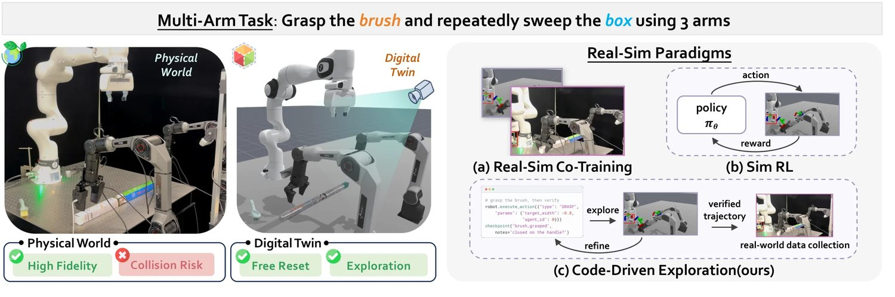
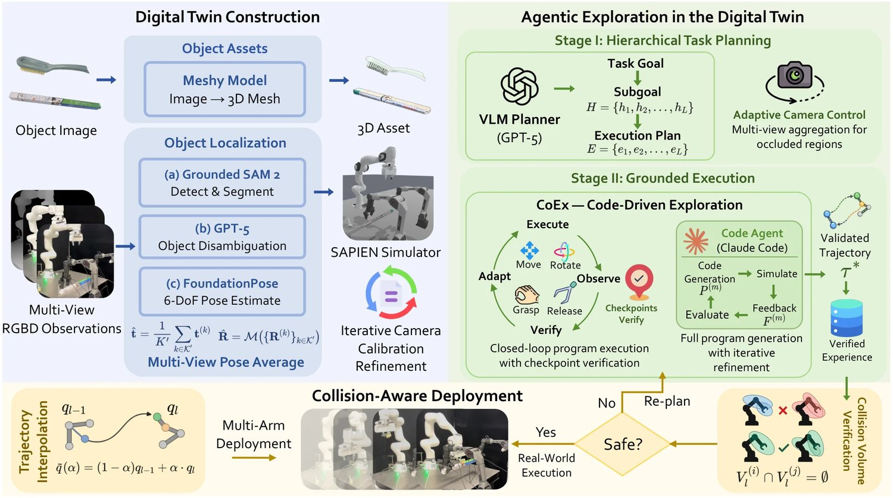
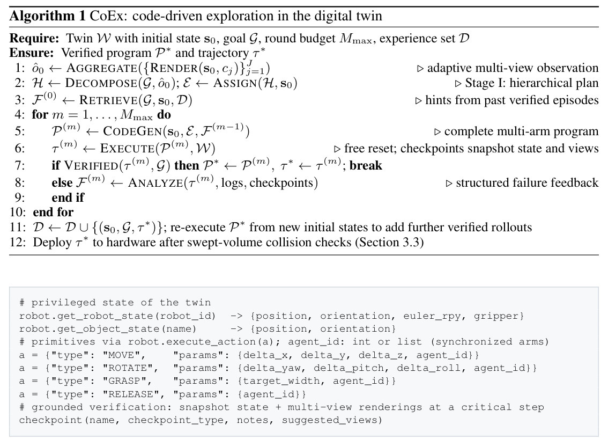
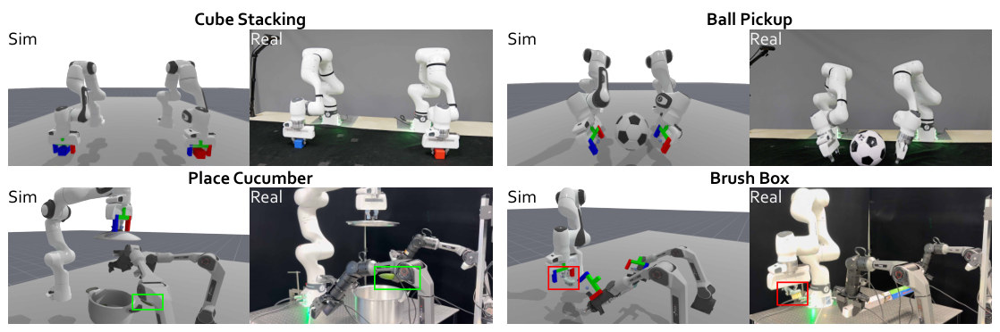
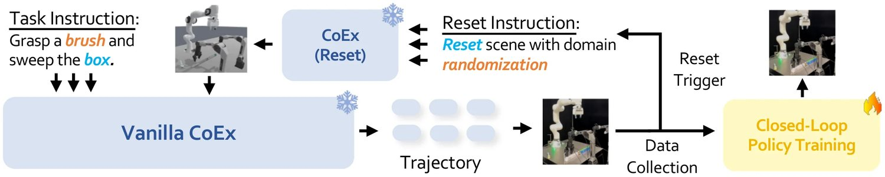
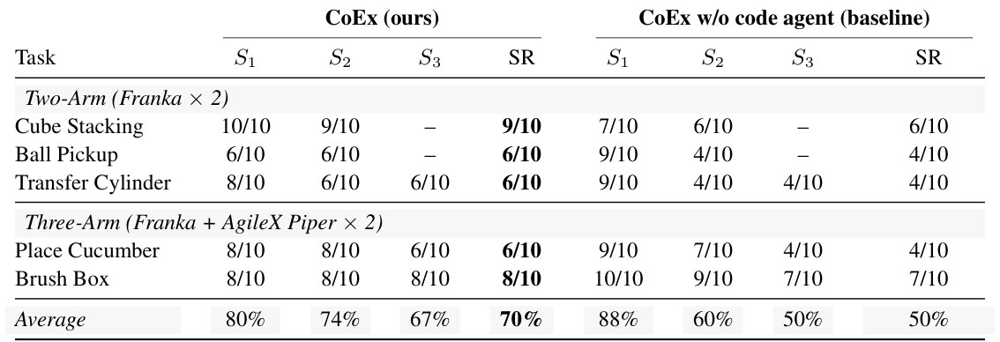
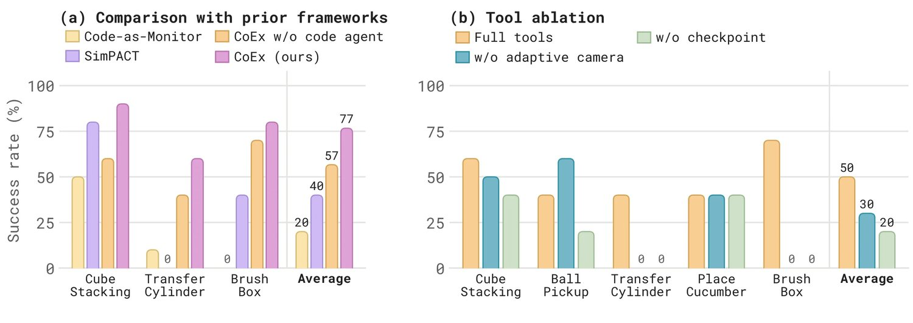
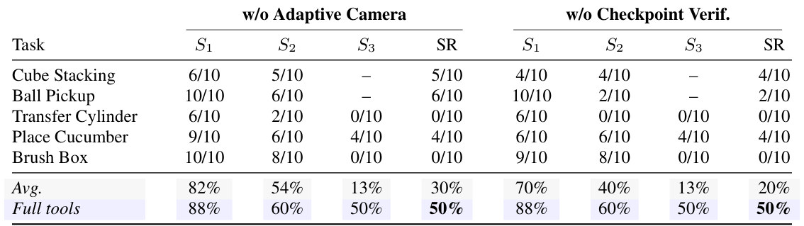
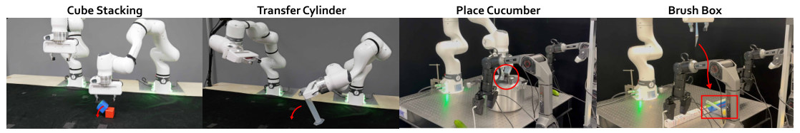
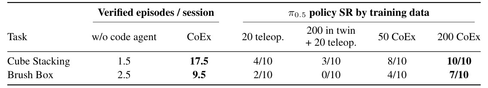

Agent-centric-real-to-sim · 归档于 2026-11-16
CoEnv
CoEnv: Code-Driven Exploration in Real-to-Sim Digital Twins for Multi-Arm Manipulation
归档到 Agent-centric real-to-sim：CoEnv 把真实多臂工作台从 RGBD 重建成可查真值的 twin，让 coding agent 在里面练程序；twin 只用来找程序，从不产训练图像。
TL;DR
- Problem
- 多臂操作的示教很贵，一条遥操作就要几个人同步。coding agent 已经能写、调整段机器人程序，却没地方练：真机每次重试都要 reset，臂会互撞、互相挡住视线；通用仿真的几何、资产、视角又和部署工作台对不上。
- Idea
- 把模拟器放在程序上游，而不是数据上游。CoEnv（框架）把工作台从 2–3 路 RGBD 重建成 ManiSkill/SAPIEN 里可 reset、可查特权状态的 twin；CoEx（方法）让 Claude Code 在 twin 里写整段多臂程序、跑、按特权状态 / checkpoint 快照 / 多视角渲染改，最多 10 轮；验证过的轨迹经扫掠体积碰撞检查在真机上回放，真机录下的就是示教。
- Result
- 5 个真机任务平均 SR 70% vs 50%（去掉 code agent，Table 1；每格 10 次，两边骨干模型也不同）；每个 session 的 verified episode 是 baseline 的 3.8–11.7 倍（Table 2）；200 条真机 CoEx rollout 微调 π0.5 达 10/10、7/10，同一程序在 twin 里录的 200 条加 20 条遥操作只有 3/10、0/10。
Problem
多臂示教贵，coding agent 又没地方练：真机试错会撞，模拟器产的数据还要跨 sim-to-real
Running example · 后面每个 stage 都跟着它走
Brush Box（Fig. 1 的 teaser 任务）：三臂工作台上 1 台 Franka Research 3 + 1 套 AgileX Piper 双臂，3 路 RealSense D435i 拍 RGBD；任务只给一句 Grasp a brush and repeatedly sweep the box，刷子和盒子每次 trial 摆得不一样 → 想要：三只臂依次过 Table 5 的三个里程碑 S1 抓到刷子 → S2 抓到盒子 → S3 刷子扫到盒子，不要人示教、臂不互撞；顺带留下能训练 visuomotor policy 的真机数据。
flowchart LR IN["例子输入
Brush Box · 3 臂"]:::example IN --> A1["人类遥操作示教
20 条 GELLO 示教"] A1 --> AX["多臂要几人同步，示教少
π0.5 只到 2/10"]:::gap IN --> B1["twin 渲染数据混训
200 条 twin + 20 条遥操作"] B1 --> BX["渲染图不像真相机
π0.5 掉到 0/10"]:::gap IN --> C1["逐步 VLM
w/o code agent
~30+ 次调用"] C1 --> CX["20+ 步漂移，刷子离开盒面
S2 9/10 → S3 7/10"]:::gap IN --> D1["已有 VLM 规划框架
Code-as-Monitor · SimPACT"] D1 --> DX["真机上才发现失败
或只认第一个计划
0/10 · 4/10"]:::gap
数字都是 Brush Box 自己的：第 1、2 条是 Table 2 里 π0.5 的结果（论文自设的参照），第 3 条是 Table 1 的里程碑，第 4 条是 Table 7。原因的出处：第 2 条是 §4.5 的解释（渲染图和真相机在纹理、光照、传感器噪声上不同）；第 3 条是 App E.3 对逐步 agent 在 Brush Box 上的分析，~30+ 次调用来自 Table 6；第 4 条的两种失败是 §4.3 针对 Transfer Cylinder 交接写的，套到 Brush Box 上是我的推断；第 1 条"示教少"也是推断，论文只说多臂遥操作要几个操作员同步（§1）。
根本问题：要么让模拟器去产训练数据（每个任务要人类示教或 reward，策略还得跨 sim-to-real），要么让 agent 一步一想、在真机上试错；缺一个和部署工作台对齐、能免费 reset、能查真值的地方，让 agent 反复调一整段程序。 这篇的切入点：把 twin 放在"程序"上游：在重建的工作台 twin 里写-跑-改整段多臂程序直到验证通过，再经碰撞检查上真机；真机跑出来的轨迹本身就是真实示教。
Related work
| 相关工作 | 解决什么 | 怎么解决 | 和本文的区别 |
|---|---|---|---|
| 同一问题 · 别的解法 | |||
| 人类示教 + 仿真放大 / 混训 HATS、MimicGen、DexMimicGen、ComSim、sim-and-real co-training | 多臂示教太贵、太少 | 人遥操作采（HATS 每个 episode 一个操作员），或拿 ~5–30 条人类示教在仿真里放大、和仿真数据混训 | 每个任务都要人类示教，策略要学仿真生成的数据 → 本文只给任务描述，策略只学真机录的 rollout；Brush Box 上 20 条遥操作 2/10，再混 200 条 twin rollout 0/10（Table 2） |
| 重建现场里学策略 RialTo、ACDC、D-REX、VR-Robo | 为部署场景学稳健策略 | 重建现场或生成 digital cousins，在里面 RL 或模仿，再靠 domain randomization 迁移 | 每个任务要示教和成功条件（RialTo）或示教、reward（ACDC），模拟器产训练数据 →本文的 twin 只搜索、验证程序，不产训练图像 |
| VLM 规划框架 Code-as-Monitor、SimPACT | 不用示教，靠 VLM 规划操作 | Code-as-Monitor 写约束代码，执行时检测失败；SimPACT 先在仿真里试计划 | 前者要等失败在真机上发生，后者没有 verify–refine 循环、接受第一个仿真放行的计划 → 本文在 twin 里先把失败撞完、最多改 10 轮；3 任务平均 20%、40% vs 77%（Table 7） |
| 相似做法 · 别的问题 | |||
| 通用 coding agent 控机器人（本文所属的一族） Tsui et al. 2026、RHO、ASPIRE、ENPIRE | 不靠示教，让 coding agent 写、改机器人程序或策略 | 在 benchmark 场景用特权状态解题、按执行反馈搜策略库、把验证过的修复攒成 skill 库、在机器人队列上改进策略 | 练习场是 benchmark 场景或真机 → 本文在部署工作台自己的 twin 里练，验证工具专为多臂遮挡和接触设计 |
| 学出来的 world model DreamerV3、Genie、UniSim | 行为先在模型里试，再执行 | 从数据学一个动作条件的观测预测器 | 不暴露特权状态，查不了位姿和接触 → 本文的 twin 是重建的物理仿真，给真值位姿、接触和扫掠体积 |
来源：论文 §1、§2 Related Work、§4.3（和 Code-as-Monitor、SimPACT 的真机对比）、App A 的 Table 3（每类 pipeline 每个任务要人给什么），未另行检索。RialTo、ACDC 只在 Table 3 里定性比较，没有对跑。多机器人 LLM 协作（RoCo、MALMM、RoboFactory 等）论文只用一句话划界：本文是集中式规划，不主张去中心化，所以没单列。
Level 1 · Big picture
模拟器放在程序上游：在 twin 里找到并验证程序，真机只回放验证过的轨迹
- CoEnv（框架）：把真实工作台重建成 twin，给 twin 配三样验证工具，把验证过的轨迹经碰撞检查送上真机，并存下经验（§3.1、§3.3、§3.4）。
- CoEx（方法）：code agent（Claude Code）在 twin 里写整段多臂程序、跑、看证据、重写（§3.2）。论文的主要结论都押在它上面。
- CoEx w/o code agent（对照）：同一 twin、primitive 和工具，换成 GPT-5.6 Sol 每步选一个 primitive。

怎么读这张图
- 顶栏 Multi-Arm Task：就是例子：3 只臂抓起 brush，反复 sweep box。
- 左 Physical World（High Fidelity ✓、Collision Risk ✗）：真实工作台，左边白色的是 Franka，中间和右边黑色的是 Piper 双臂。真实，但每次试错都可能撞臂。
- 中 Digital Twin（Free Reset ✓、Exploration ✓）：同一工作台搬进仿真，右上的相机图标表示可以从任意视角渲染。
- 右上 (a) Real-Sim Co-Training、(b) Sim RL：(a) 把仿真轨迹混进少量真实数据训练策略；(b) 策略网络（图里写 πθ，θ 是网络参数）在仿真里用 action 换 reward 来学。两者都让模拟器产训练数据，所以要跨 sim-to-real。(a) 在例子上就是 E5 的 "200 in twin + 20 teleop"：0/10。
- 下 (c) Code-Driven Exploration (ours)：代码窗里是例子的一段程序：
GRASP，target_width -0.8，agent_id 0，然后checkpoint("brush_grasped", notes="closed on the handle?")；explore 箭头进 twin，refine 箭头回到代码；verified trajectory 送去真机做 real-world data collection。这段代码是示意：按 Prompt 6，−0.8 是 Piper 的夹爪值，而 Fig. 7 和 Fig. 4 里拿刷子的是 Franka（我的观察）。
flowchart TD IN["输入
3 路 RGBD + 一句任务"]:::example --> TW["CoEnv · 重建 twin
刷子、盒子、3 只臂"] TW --> CX["CoEx · 写-跑-改整段程序
Claude Code，≤10 轮"]:::win CX --> DP["CoEnv · 碰撞检查部署
真机 SR 8/10"] DP --> OUT["真机轨迹 = 示教
200 条 → π0.5 7/10"]
Level 2 · Stages
5 个 stage，三样验证工具贯穿 Stage 2–3（Fig. 2）

符号表（Fig. 2 和 Algorithm 1 共用）
| 符号 | 白话 | 例子里 |
|---|---|---|
| W | twin 本身：结构化状态 + 物理（ManiSkill on SAPIEN）+ 任意视角渲染 | Franka、两只 Piper、刷子、盒子的仿真场景 |
| s0 | twin 的初始状态：每只臂、每个物体的位姿 | 这次 trial 刷子和盒子摆在哪（每次不同） |
| G | 任务目标，一句话 | Grasp a brush and repeatedly sweep the box |
| t(k)、R(k)、K′ | 第 k 个视角估出的物体位置、朝向；看到这个物体的视角数 | 刷子在每路相机里的位姿；最多 3 路 |
| t̂、R̂、M | 融合后的位置（各视角取平均）和朝向（M = 四元数平均） | 刷子写进 twin 的最终位姿 |
| H = {h1…hL} | 子目标列表，每个是一句语义目标 | 论文举例 "pick up the red cube"；Brush Box 的没打印 |
| E = {e1…eL} | 执行计划：每步 = 哪只臂 + 哪个 primitive（MOVE / ROTATE / GRASP / RELEASE）+ 参数 | 同上，没打印 |
| P(m) | 第 m 轮写出的整段 Python 程序 | Fig. 1(c) 的片段：GRASP 后打 checkpoint "brush_grasped" |
| F(m) | 第 m 轮的结构化失败反馈：碰撞位置、没达成的子目标；喂给下一轮 | 没打印 |
| Mmax | 最多改几轮 | 10 |
| P*、τ* | 验证通过的程序，和它跑出的轨迹：每个 primitive 结束时各臂的关节角 | 刷盒程序和它的轨迹 |
| D | verified experience：存下的成功经验；实际存的是 agent 写的短笔记（App D.3） | 下次进 prompt 的 Operational Hints |
| cj、J | 第 j 个虚拟相机的位姿；相机个数 | 渲染 1920×1080，环绕场景中心 |
| ql−1、ql、α | 相邻两个 primitive 结束时的关节角；插值比例，从 0 走到 1 | 没报告具体值 |
| Vl(i) | 第 i 只臂沿第 l 段插值路径扫过的空间 | Franka 和两只 Piper 两两不能相交 |
怎么读这张图
- 左上 Object Assets：Object Image（正是一把刷子和一个长盒子）→ Meshy Model（Image → 3D Mesh）→ 3D Asset。= Stage 1 的建模。
- 左中 Object Localization：Multi-View RGBD Observations 进来，(a) Grounded SAM 2 检测分割，(b) GPT-5 区分相似实例，(c) FoundationPose 每视角给 6-DoF；下方公式 Multi-View Pose Average：位置取平均，朝向用 M 平均。图里写 GPT-5，正文和附录都写 GPT-5.6 Sol。
- 中 SAPIEN Simulator、Iterative Camera Calibration Refinement：建好的 twin（正文说是 ManiSkill on SAPIEN），相机外参靠渲染对比迭代修。
- 右上 Stage I: Hierarchical Task Planning：VLM Planner 把 Task Goal 拆成 Subgoal H，再拆成 Execution Plan E；右边 Adaptive Camera Control（Multi-view aggregation for occluded regions）是三样工具之一。= Stage 2。
- 右中 Stage II 的 CoEx 框：左环 Execute → Observe → Verify → Adapt（四个 primitive 图标和 Checkpoints Verify）是程序跑起来时的步级环，逐步 baseline 只有这个环；右框 Code Agent (Claude Code) 的 Code Generation P(m) → Simulate → Feedback F(m) → Evaluate 是程序级环，CoEx 独有。= Stage 3。
- 最右 Validated Trajectory τ* → Verified Experience：验证过的轨迹入库。= Stage 5。
- 底部 Collision-Aware Deployment，从右往左读：Collision Volume Verification 检查任两只臂的扫掠体积不相交（红叉 = 相交，绿勾 = 不相交）→ Safe? → No 走 Re-plan 回到 CoEx，Yes 走 Real-World Execution → Multi-Arm Deployment；最左 Trajectory Interpolation 是相邻关节点之间的线性插值。= Stage 4。
flowchart TD S1["1 · 重建 twin · CoEnv
3 路 RGBD → ManiSkill"] --> S2["2 · 分层规划 · Stage I
sweep the box → 分臂"] S2 --> S3["3 · CoEx 程序循环 · Stage II
Claude Code，≤10 轮"]:::win VT["验证工具 · twin 提供
特权状态 · checkpoint
自适应视角"] -.-> S2 VT -.-> S3 S3 --> S4["4 · 碰撞检查部署 · CoEnv
Brush Box 真机 8/10"] S4 -->|"扫掠体积相交 → 重规划"| S3 S4 --> S5["5 · 经验复用
200 条 → π0.5 7/10"] S5 -.->|"笔记 → hints"| S3 click S1 href "#stage-1" click S2 href "#stage-2" click S3 href "#stage-3" click S4 href "#stage-4" click S5 href "#stage-5" click VT href "#stage-all"
点击 stage 展开 Level 3 细节；贯穿 Stage 2–3 的三样工具见 Grounded verification。
Level 3 · Details
每个 stage 的细节
Stage 1 · CoEnv 重建 digital twin 2–3 路标定 RGBD + 每个物体几张参考图 → ManiSkill/SAPIEN 里度量对齐、可 reset、可查状态的 twin W（§3.1、App C.1）
- Why：agent 要在自己的部署工作台里练。通用 benchmark 的几何、资产、相机视角对不上现场，在那里调好的程序搬不过来（§1）。
- Asset：Meshy 从每个物体几张参考图生成网格（不用噪声大的摄影测量网格），缩放到真实尺寸，配低多边形 convex collision proxy，按类别给 mass、friction；每类物体只做一次。
- 定位：每个视角 Grounded SAM 2 检测、分割目标；GPT-5.6 Sol 借空间上下文区分长得像的实例；FoundationPose 每个视角给一个 6-DoF 位姿。
- 融合：在看到该物体的 K′ 个视角上，位置取算术平均，朝向做四元数平均（Markley 2007），抵消单视角遮挡和外参的小偏差。
- 标定：利用仿真随时能 reset，反复渲染当前 twin、和真实画面对比，修相机外参，直到重投影误差稳定在毫米级。
- 设计取舍：不追求照片级，要的是 resettable、queryable、和工作台 metrically aligned：agent 对着真值调程序，训练图像永远来自真实相机，不来自 twin。
- 没报告：位姿误差和重投影误差的具体数字、各物体 mass 和 friction 的取值、建一个 twin 要多久。
flowchart TD AS["参考图 → Meshy 网格
刷子、盒子"] --> TW SG["每视角 SAM 2 + GPT 消歧
被夹爪挡住的刷子"] --> FP["每视角 FoundationPose
6-DoF 位姿"] FP --> FU["多视角融合
位置平均 + 四元数平均"] FU --> TW["Twin W
ManiSkill on SAPIEN"]:::win TW --> CA["渲染对比修外参
直到误差稳定在 mm 级"] CA -->|"更新外参"| TW
Running example 在这一步
三臂工作台用 3 路 D435i；刷子和盒子由 Meshy 从参考图生成（Fig. 2 左上的 Object Image 就是它们）；GPT-5.6 Sol 要处理的正是 被夹爪挡住一部分的刷子 这种情况（App C.1 原例）；看到刷子的那几路相机各给一个位姿，平均后写进 twin。论文没给刷子、盒子的质量、摩擦和位姿误差。
Stage 2 · Stage I 分层任务规划 任务一句话 G + 初始状态 s0 → 子目标 H、分臂计划 E、过去经验的 hints F(0)（§3.2、Algorithm 1 第 1–3 行）
- Why：多臂任务先得定哪只臂做哪步；CoEx 和逐步 baseline 都从这份计划出发（App C：两者共用 Stage I）。
- 先看：从多个虚拟相机渲染初始场景再聚合，即自适应视角（第 1 行）。
- 再拆：GPT-5.6 Sol 把 G 拆成语义子目标 hl，每个配一步 el = (哪只臂, 哪个 primitive, 参数)，由 IK 执行。
- Primitive 的约定：都是相对当前末端位姿的 delta，省掉全局坐标标定；agent_id 可以是整数或列表，列表 = 几只臂同步动作；参数可以广播，也可以逐臂给。
- 取经验：从 D 取回过去验证过的经验，当第一轮的 hints（第 3 行）。
- 论文没说清：Table 6 把 CoEx 的 Planning 写成 "Structured system prompt"，Prompt 8 又让 code agent 自己写 plan.md；E 怎么进入 code agent 的 prompt，Prompt 5 的骨架里看不到。
flowchart TD OB["多视角渲染再聚合
初始场景"] --> PL["GPT-5.6 Sol 拆解
G → H → E"] PL --> HO["交给 Stage 3
计划 E + hints"] RT["从 D 取经验
Operational Hints"] --> HO
Running example 在这一步
G = Grasp a brush and repeatedly sweep the box。论文没打印 Brush Box 的 H 和 E。评测里程碑（Table 5）是抓到刷子 → 抓到盒子 → 刷子扫到盒子；项目页视频里是一只 Piper 夹住长盒，Franka 拿起刷子来回扫（视频所见）。三臂任务的代码模板（Prompt 7）把 0、1 号给两只 Piper，2 号给 Franka。
Stage 3 · CoEx 程序级探索：写、跑、改整段多臂程序 计划 E + s0 + hints → 验证通过的程序 P* 和轨迹 τ*，最多 10 轮（§3.2、Algorithm 1 第 4–10 行、App C.3.3、Prompt 5–8）
- Why：逐步 agent 每走一步想一次：一个任务 ~30+ 次 VLM 调用（Table 6），推理随 episode 结束就没了，小误差沿时间累积。程序级一次推理覆盖整个任务，失败对着产生它的程序来诊断，留下的是能重跑、能检索、能让人先读一遍的源代码。
- 写（CODEGEN）：Claude Code 写一整段 Python：先读状态再算 delta，执行 primitives，在关键处打 checkpoint。规则：对任意初始状态都成立、不许硬编码，每轮自包含。
- 跑（EXECUTE）：twin 每轮 reset 到同一初始状态，程序在沙箱（受限命名空间 + 超时）里一次跑完，运行中没有实时画面。
- 产出：summary.json（错误状态、最终状态、checkpoint）、execution_stdout.txt（全部 print）、initial_state/ 的 front、top、side 三张图、checkpoints/<name>/ 的图和 states.json。
- 改（ANALYZE）：每轮必做：读 stdout 的 target vs actual gap → 读 summary.json 看物体真的动了没 → 看关键 checkpoint 图（pre_grasp、post_lift）→ 找 root cause，不修症状；整理成 F(m)（碰撞位置、没达成的子目标）。
- 停：通过就停并存进 D；否则带着 F(m) 重写，最多 Mmax = 10 轮。另跑的探索脚本不算轮数（Prompt 8）。
- 谁判"通过"：§3.2 写的是 code agent 自己 "evaluates the outcome"（读最终状态、日志和快照）；论文没给一个独立于 agent 的自动成功判据（我的读法）。

怎么读这张图
- 第 1 行 AGGREGATE(RENDER)：从 J 个虚拟相机渲染初始场景再聚合，即自适应视角。
- 第 2–3 行：Stage 2 的拆解、分臂和取经验（hints F(0)）。
- 第 4–10 行，循环本体：CODEGEN 写整段程序 → EXECUTE 在 twin 里跑（free reset，checkpoint 存状态和视图）→ VERIFIED 就 break，否则 ANALYZE 日志和 checkpoint，得到下一轮的 F(m)。
- 第 11 行：(s0, G, τ*) 入库，并从新的初始状态重跑 P*，多产 verified rollout。这就是 E4 吞吐的来源。
- 第 12 行：τ* 过扫掠体积碰撞检查后上真机（Stage 4）。
- 下方代码框（Fig. 3）：三类接口。privileged state：get_robot_state 给 position、orientation、euler_rpy、gripper，get_object_state 给 position、orientation；primitives：MOVE、ROTATE 是 delta，GRASP 给 target_width，RELEASE，agent_id 是 int 或 list；最后是 checkpoint(name, checkpoint_type, notes, suggested_views)。
flowchart TD CG["CODEGEN
整段 3 臂 Python"] --> EXE["EXECUTE in twin
reset → 一次跑完"] EXE --> VF["VERIFIED?
最终状态对照目标"] VF -->|"否"| AN["ANALYZE
stdout + checkpoint 图"] AN -->|"F(m)，至多 10 轮"| CG VF -->|"是"| PS["P* 和 τ*
入库 D"]:::win
Running example 在这一步
Claude Code 按三臂模板写一整段程序，其中一段就是 Fig. 1(c)：GRASP target_width −0.8, agent_id 0，接着 checkpoint("brush_grasped", notes="closed on the handle?")。按 Prompt 8 的流程，跑完后 agent 打开 checkpoints/brush_grasped/ 的多视角图，看夹爪是不是夹在刷柄上，没夹上就改程序再跑（流程推演）。论文没报 Brush Box 实际用了几轮、反馈写了什么；Table 6 只给量级：CoEx 每个任务 ~1–5 次代码生成，逐步 baseline ~30+ 次 VLM 调用。
贯穿 Stage 2–3 Grounded verification：twin 提供的三样工具 twin 的真值状态 + 任意视角渲染 → 每步 SUCCESS / FAIL、关键步谓词 0 / 1、被挡区域的多视角图（§3.2、App C.3、Prompt 2–8、Table 8）
- Why：多臂工作台里臂会互相挡住接触区，固定视角看不见；风险步（抓前对齐、交接）一错，后面全错（§4.4）。
- 给谁用：twin 把这三样工具给"任何在里面行动的 agent"（§3.2）；CoEx 和逐步 baseline 用法不同，见下表。
| 工具 | 在 twin 里做什么 | CoEx 里怎么用 | 逐步 baseline 里怎么用 | 证据 |
|---|---|---|---|---|
| 特权状态检查 verifier vl | 读真值：TCP 位姿、夹爪开度（1 = 开，−1 = 全合）、物体 6-DoF 位姿；每一步判 SUCCESS / FAIL | 程序先读状态再算 delta；关键 MOVE 后打印 target vs actual 的 gap（够不着时会静默停在最近点，gap 大 = 碰到关节极限）；GRASP + LIFT 前后打印物体 z（不变 = 没抓到）；summary.json 存最终状态 | 每一步 VLM 拿当前图和状态；FAIL 就重设参数或插入纠正步；另有卡住检测、动作后漂移纠正、闲置臂稳定 | 没有单独 ablation |
| Checkpoint 谓词 φ ∈ {0, 1} | 关键步（如抓前夹爪对齐）不动作，只存状态 + 多视角渲染，判谓词 | checkpoint(name, type, notes, suggested_views)，type 是 grasp / lift / handover / place / generic；程序一次跑完、没有实时画面，快照只供跑完后复查 | φ = 1 才往下走：位置误差超过 0.02 m 先 MOVE，朝向误差超过 0.1 rad 先 ROTATE，再转相机确认物体在两指之间 | 去掉后 50% → 20%（Table 8） |
| 自适应视角 AGGREGATE(RENDER) | 从多个虚拟相机渲染 1920×1080 的图再聚合，露出被臂挡住的区域 | Algorithm 1 第 1 行先聚合多视角给规划；checkpoint 的 suggested_views；每轮输出 front、top、side 三张初始图 | CAMERA_ORBIT(yaw, pitch)：规划阶段至少 2 个角度、最多 6 轮；俯视 pitch ≥ 1.2 看布局，侧视 yaw = 0、±1.57、±3.14 看高度和间隙 | 去掉后 50% → 30%（Table 8） |
Table 8 的两个 ablation 都是在逐步 baseline 上做的；CoEx 本身去掉这些工具会怎样，论文没测。
flowchart LR ST["特权状态
TCP、夹爪、物体位姿"] --> VE["verifier
SUCCESS / FAIL"] CK["checkpoint 快照
brush_grasped"] --> PH["谓词 φ
0 / 1"] CM["多相机渲染
CAMERA_ORBIT 或 suggested_views"] --> AG["聚合视图
露出被挡的接触区"]
Running example 在这一步
Fig. 1(c) 的 checkpoint("brush_grasped", notes="closed on the handle?") 就是一个抓取后的谓词：夹爪有没有闭合在刷柄上。逐步 baseline 去掉自适应视角或 checkpoint 后，Brush Box 的 S1、S2 都还在（10/10、8/10 和 9/10、8/10），S3 扫动全掉到 0/10（Table 8）。论文的解释：这是遮挡重的任务，干活的臂从任何固定视角都挡住接触区；没有前提把关，早期误差沿长 horizon 累积。
Stage 4 · CoEnv 碰撞检查部署：把验证过的轨迹送上真机 τ*（每个 primitive 结束时各臂的关节角）→ 真机上插值后的关节轨迹，每个插值动作先过扫掠体积检查（§3.3、App C.2）
- Why：twin 里的轨迹只有稀疏的关节点；真机要平滑轨迹，而且几只臂共享工作区，任何一步两只臂扫过的空间相交就会撞。
- 记录：仿真里每个 primitive 完成时，记下每只臂 i 的关节角 ql(i)。
- 插值：相邻两点线性插值 q̃(i)(α) = (1 − α) ql−1(i) + α ql(i)，切成 S 个均匀步给真机控制器（S 没报告）。
- 检查：每个插值动作执行前，正运动学沿插值路径、按各臂连杆几何算出扫掠体积 Vl(i)；任意两只臂都满足 Vl(i) ∩ Vl(j) = ∅ 才放行，否则丢掉这个动作，从当前状态重新规划。
- 控制器：Franka 走 Deoxys（关节位置控制，用它默认的插值）；Piper SDK 只收关节位置，作者自己在相邻 waypoint 之间线性插值。
- 执行方式：真机上是开环回放，不用相机闭环修正（§5 Limitations）；残余位姿偏差因此是主要失败源。
- 结果：100 条部署轨迹没有一次臂间碰撞（§4.2；按 Table 1 的 5 任务 × 10 次 × 2 种 agent 正好 100，这是我的推算）。被拒动作、重规划各发生几次，论文没报；按 §3.3 的公式，检查只管臂与臂，不管臂与物体（我的读法）。
flowchart TD TJ["τ* 的关节点
每个 primitive 结束时的 q"] --> IP["线性插值
S 步，S 未报告"] IP --> FK["正运动学算扫掠体积
每只臂一个 V"] FK --> CC["任两只臂的 V 相交吗
Franka、Piper、Piper"] CC -->|"不相交"| RUN["真机执行
开环回放"]:::win CC -->|"相交：丢弃"| RP["从当前状态重规划
回到 CoEx"]:::gap

怎么读这张图
- 每组左 Sim、右 Real：twin 里规划的同一时刻和真机执行；Sim 画面里夹爪上的彩色三轴是位姿坐标架（我的读法）。
- 右下 Brush Box：例子本身。红框框住 Franka 夹着的刷子，Sim 和 Real 位置一致；右边的 Piper 夹着长盒。
- 左下 Place Cucumber：Franka 举着锅盖，绿框是 Piper 夹着、正要放进锅里的黄瓜。
- 上排 Cube Stacking、Ball Pickup：双 Franka 工作台；Ball Pickup 两只臂一起夹住足球。
Running example 在这一步
Brush Box 的 10 次真机 trial：CoEx S1 8/10 · S2 8/10 · S3 8/10 · SR 8/10，凡是抓到刷子的都刷完了（Table 1）；没有一次臂间碰撞。
Stage 5 · CoEnv 复用 verified experience 验证过的 episode → ① agent 写的短笔记，当下次的 hints；② 同一程序从新初始状态重跑、在真机上录下的 rollout，当 π0.5 的示教（§3.4、§4.5、App D）
- Why：每条 verified rollout 本身就是一条示教，探索不该白做（§3.4）。
- 当范例：框架存下每个验证过的 episode。存的不是原始程序，而是 agent 自己总结的短笔记：过了验证的策略和抓取参数、失败轮的原因；之后经 prompt 的 Operational Hints 字段交给 CoEx。所有实验都开着，没单独 ablate。
- 当监督：程序验证通过后，冻结的 agent 收到 reset 指令，从每个新的初始状态重发任务，所以一整个 session 只用一轮探索。每条轨迹展开成 (ot, at) 对，按 action chunk 做 behavior cloning（式 1）。
- agent 和 policy 的分工：agent 的程序要查特权状态；policy 只看原始观测，一次前向就出动作，不再逐 episode 推理。
- 留作未来：用同样的工具复验 policy 的 rollout，再加进 D。
符号表（式 1：LBC(θ) = E ℓ(πθ(ot), at:t+H)）
| 符号 | 白话 | 例子里 |
|---|---|---|
| ot | t 时刻的观测：相机图像 + 本体感觉 | 3 路 RGB 640×480、30 Hz，加全部关节角 |
| at:t+H | 接下来 H 步的动作块（action chunk） | 关节角目标；H 没报告 |
| πθ | 要微调的 visuomotor policy，θ 是它的参数 | π0.5，从公开权重开始 |
| ℓ | policy 自带的模仿损失 | π0.5 的原生 loss |

怎么读这张图
- 左上 Task Instruction："Grasp a brush and sweep the box."，三个箭头送进 Vanilla CoEx（雪花 = 冻结，不训练）。
- 中间一行：Vanilla CoEx 出 Trajectory → 真机执行（照片）→ Data Collection 送去右边的 Closed-Loop Policy Training（火焰 = 这里在训练）。
- Reset Trigger 回路：录完一条就触发 Reset Instruction（"Reset scene with domain randomization"）→ CoEx (Reset)（同样冻结）→ 新初始状态的 twin（灰色图）→ 再交给 Vanilla CoEx 重发任务。
- 右上照片：训好的 policy 在真机上跑。
- 和实际做法的差别：App D.1 说初始状态是人挑的、场景手动 reset；图上的 domain randomization 在这项研究里没用上。
flowchart TD PV["P* 已验证
刷盒程序"] --> RS["冻结 agent 重发任务
人挑初始状态、手动 reset"] RS --> RC["真机执行 + 录制
3 路 RGB 30 Hz + 关节角"] RC --> KP["只收完成的
每任务 200 条"] KP --> BC["BC 微调 π0.5
Brush Box 7/10"]:::win PV -.-> NT["agent 写的笔记
→ Operational Hints"]
Recap：例子覆盖了论文的哪些 idea
| 论文里的 idea | 例子里在哪体现 |
|---|---|
| 模拟器放在程序上游（Fig. 1c） | Level 1：twin 里验证过的刷盒程序上真机，真机录的才是训练数据 |
| CoEnv 建 twin：生成 asset、分割 + 消歧、多视角位姿融合、迭代标定 | Stage 1：3 路 RGBD → 刷子、盒子、三只臂的 ManiSkill twin；"被夹爪挡住一部分的刷子"要 GPT 消歧 |
| 分层规划 + 多臂同步 primitive | Stage 2：sweep the box → 子目标 → 分臂计划（论文未打印）；agent_id 列表 = 同步 |
| CoEx 程序级循环 | Stage 3：Claude Code 写整段三臂程序，checkpoint "brush_grasped"，至多 10 轮 |
| 特权状态检查、checkpoint 谓词、自适应视角 | 贯穿 Stage 2–3：去掉后逐步 baseline 在 Brush Box 的 S3 掉到 0/10 |
| 碰撞检查部署 | Stage 4：Brush Box 真机 8/10；100 条轨迹 0 次臂间碰撞 |
| 经验当 hints、当示教 | Stage 5：笔记进 Operational Hints；200 条真机 rollout → π0.5 7/10 |
| 对比逐步决策、已有框架 | E1：8/10 vs 7/10；E2：Code-as-Monitor 0/10、SimPACT 4/10 |
| 吞吐 | E4：每 session 9.5 vs 2.5 条（3.8×） |
| 失败模式 | E3：Fig. 8 刷子在移动中掉落；逐步 baseline 刷到第三、四下漂离盒面 |
Results
真机上程序级探索更稳（70% vs 50%），验证过的程序还能成批产出真机示教
顺序同论文 §4 的四个问题：E1 5 个真机任务上 CoEx 对逐步 baseline（Q1）→ E2 对两个已有 VLM 规划框架（Q2）→ E3 哪个工具让探索可靠、失败在哪（Q3）→ E4 每个 session 攒下多少 verified episode、E5 这些 rollout 能不能当示教（Q4）。E1–E3、E5 比的是真机成功率，E4 比数量；论文没报时间、token 或费用，Table 6 只给了调用次数的量级。
E1程序级探索能不能真解多臂任务，比逐步决策强在哪？§4.2 · Table 1

- 说明什么
- 成功率更高，而且过了第一关就很少再掉。平均 SR 70% vs 50%，5 个任务都领先，Cube Stacking 最高 9/10。baseline 过 S1 反而更多（88% vs 80%），但过了 S1 的 44 次只完成 25 次（57%）；CoEx 是 40 次完成 35 次（88%）。CoEx 的 15 次失败里 10 次在 S1 之前，Ball Pickup 的 4 次失败全在双臂第一次接触球时。例子 Brush Box：CoEx 8/8/8/8，baseline 10/9/7/7。
- 在故事里
- Q1，撑起"程序是探索的单位"：在 twin 里端到端验证过的程序把整段多臂动作连贯地写定，要么早早在第一次抓取失败，要么一路做完；逐步决策则让小误差沿时间累积（§4.2）。
- 指标
- Si = 第 i 个里程碑按顺序达成（Table 5），SR = 最后一个里程碑达成；每个任务、每种 agent 10 次真机 trial。谁来判里程碑，论文没写。
- 怎么评测
- 两套工作台：Franka ×2 做 Cube Stacking、Ball Pickup（双臂抬球）、Transfer Cylinder（交接）；Franka + Piper 双臂做 Place Cucumber（掀锅盖 + 放黄瓜）和 Brush Box。底座固定，物体位姿每次不同；2–3 路 D435i。
- baseline 是 CoEx w/o code agent：同一 twin、primitive 和工具，GPT-5.6 Sol 每步选 primitive；CoEx 用 Claude Code、Mmax = 10。骨干模型和循环结构同时不同，论文自己承认这点。
- 每格只有 10 次，论文自己说逐任务的差距只能当趋势看；100 条部署轨迹没有一次臂间碰撞。
- 每次 trial 是否重新建 twin、重新探索，论文没写。
E2比已有的 VLM 规划框架强吗？§4.3 · Fig. 5(a) · Table 7

- 说明什么
- 成功率高过两个已有框架。3 个代表任务平均：CoEx 77%，w/o code agent 57%，SimPACT 40%，Code-as-Monitor 20%（Table 7）。差距最大的是 Transfer Cylinder 交接：Code-as-Monitor 1/10、SimPACT 0/10、CoEx 6/10。Brush Box：0/10、4/10、7/10、8/10。Cube Stacking 上 SimPACT 8/10，高过 w/o code agent 的 6/10。
- 在故事里
- Q2：两种失败正好互补。Code-as-Monitor 要等失败在真机上发生才检测到；SimPACT 接受它的模拟器放行的第一个计划。CoEx 在 twin 里先撞上同样的失败，那里重试免费（§4.3）。
- 指标
- 真机 SR，每个任务 10 次 trial（Table 7 给计数）。
- 怎么评测
- 3 个任务分别代表简单双臂（Cube Stacking）、要反应的双臂交接（Transfer Cylinder）、三臂（Brush Box）。
- Code-as-Monitor（CVPR 2025）做执行时的失败检测，不在仿真里规划；SimPACT（CVPR 2026）在仿真里规划，但没有迭代的 verify–refine 循环。
- 两者用什么模型、能不能用同一个 twin、怎样改成多臂，论文没写。
E3哪个工具让探索可靠，失败又在哪？§4.4 · Fig. 5(b) · Table 8 · Fig. 8 · App E

- 说明什么
- 两样工具都不能少，checkpoint 更关键。去掉自适应视角：平均 SR 50% → 30%，Transfer Cylinder、Brush Box 都 0/10；去掉 checkpoint：50% → 20%。Brush Box 两种去法都还能抓到刷子和盒子（S1、S2 为 10/10、8/10 和 9/10、8/10），扫的那一步全掉到 0/10。也有反例：Ball Pickup 去掉自适应视角反而 6/10，高过全工具的 4/10。
- 在故事里
- Q3：两样工具对应两类失败：看不见（臂挡住接触区）和前提不可靠（没确认就往下做，早期错误沿长 horizon 累积）。论文据此说两者各自不可少（1.7× 和 2.5×，即 50/30 和 50/20）。
- 指标
- 同 E1：Si 和 SR，每格 10 次真机 trial。
- 怎么评测
- ablation 只在 CoEx w/o code agent 上做，理由是那里每个工具对单步决策的影响看得见；CoEx 本身去掉工具会怎样，没测。
- 经验 hints 机制所有实验都开着，没单独 ablate。
- 失败分析（App E、Fig. 8）是定性的，没有计数，见下。

怎么读这张图
- Cube Stacking：放置时有 sim-to-real 位置偏差，叠上去的方块滑落（红箭头）。
- Transfer Cylinder：接收臂没对准递出臂的夹爪，交接时圆柱掉落。
- Place Cucumber：锅盖抓在不稳的点上（红圈），拿着的时候掉了。
- Brush Box：例子自己的失败：规划错误让刷子在移动阶段掉落（红框）。
- 失败模式 1，sim-to-real 位置偏差（5 个任务都有）：外参和位姿估计的残差带来毫米级偏移；Ball Pickup 每只臂 ~2–3 mm 就合不拢，Place Cucumber 的锅口只有 ~12 cm。论文建议接触时做 residual 修正，或在 trial 之间用 fiducial 在线重标外参。
- 失败模式 2，重规划停滞：逐步 agent 卡在已经失败的抓法上微调；code agent 有时只把目标挪 1 mm，不碰真正的几何约束，耗光 Mmax。建议用鼓励多样性的 prompt，或记住失败过的策略。
- 失败模式 3，agent 特有：逐步 agent 20+ 步后末端漂移，Brush Box 刷到第三、四下时刷子已离开盒面几毫米；CoEx 难在交接这类"一只臂要看另一只臂实际停在哪"的步骤，程序只能预判。建议混合：反应式子步交给逐步控制，其余留在程序级。
E4同样一个 session，能攒下多少条 verified episode？§4.5 · Table 2 左

- 说明什么
- verified episode 多 3.8–11.7 倍。Cube Stacking 17.5 vs 1.5（11.7×），Brush Box 9.5 vs 2.5（3.8×）。
- 在故事里
- Q4 前半：一个验证过的程序能从新初始状态反复重跑（Algorithm 1 第 11 行），推理摊到很多 rollout 上；逐步 agent 每个 primitive 都要付一次推理。Table 6 的量级：CoEx 每个任务 ~1–5 次代码生成，逐步 baseline ~30+ 次 VLM 调用；twin reset 是瞬时的。
- 指标
- 每个 agent session 产出的 verified episode 数。论文没定义 session：多长、什么预算、平均了几个 session（17.5 这样的小数说明是平均值），都没写。
- 怎么评测
- 只测了 Cube Stacking 和 Brush Box 两个任务。
- 是在 twin 里还是真机上计数，没明说；紧跟的一句 "Twin resets are instantaneous" 暗示是 twin 里（推断）。
E5这些 rollout 能直接当示教训 policy 吗？在哪录更要紧？§4.5 · Table 2 右 · App D
- 说明什么
- 真机录的 CoEx rollout 比人类示教和 twin 数据都好用，而且越多越好。Cube Stacking：4/10 → 3/10 → 8/10 → 10/10；Brush Box：2/10 → 0/10 → 4/10 → 7/10。twin 数据混训反而低于只用 20 条遥操作。
- 在故事里
- Q4 后半和第 4 条贡献：程序、条数、评测协议都一样，第 2 列和第 4 列只差在哪录（twin vs 真机）：3/10 vs 10/10，0/10 vs 7/10。论文的解释：π0.5 吃的是相机图像，渲染图在纹理、光照、传感器噪声上和真相机不同；程序按物体位姿写，所以能跨过去，像素不能。
- 指标
- 每个 policy 10 次真机 trial 的 SR，协议同 §4.1。
- 怎么评测
- 每个任务用 CoEx 在真机上录 200 条，只收完成的，50 条是其中的子集；3 路 RGB 640×480、30 Hz，加全部关节角；动作是关节角目标。
- 20 条参照示教用 GELLO 遥操作，同一格式；"200 in twin" 是同一个验证程序在 twin 里录的 200 条。
- 从公开的 π0.5 权重微调，每个任务、每份数据一个 policy：30k 步、batch 64、8×H100，不做数据增强。
- 初始状态是人挑的，episode 之间手动 reset（Fig. 6 画的 domain randomization 没用上）；"没有人类示教"，但有人摆场景。只有 2 个任务。
Limits
局限和开放问题
- 论文自己承认：twin 只覆盖刚体、预生成 asset、固定底座、静态场景；协调是集中式的，不谈去中心化，也不谈超过 3 只臂。
- 论文自己承认：真机是开环回放，残余位姿偏差是主要失败源；评测规模小（每格 10 次）；CoEx 和它的 ablation 骨干模型不同（Claude Code vs GPT-5.6 Sol）。
- 论文自己承认：code agent 可能只做 1 mm 级的小改动，耗光 10 轮；交接这类步骤程序只能预判、不能在线适应；依赖专有模型，版本会变。
- 没测的：工具 ablation 只在逐步 baseline 上做，CoEx 去掉 checkpoint 或自适应视角会怎样不知道；经验 hints 没 ablate。
- 没报告的：twin 的精度（位姿误差、重投影误差、mass 和 friction 的取值）；实际用了几轮、花多久、多少钱；session 的定义；被碰撞检查拒掉、重规划的次数；插值步数 S；Code-as-Monitor 和 SimPACT 怎么跑的。
- 谁判 verified：twin 里的"通过"由 code agent 自己读最终状态、日志和快照来判（§3.2），没有独立的自动判据。
- 碰撞检查的范围：按 §3.3 的公式只查臂与臂的扫掠体积，不查臂与物体、臂与桌面。
- 图文不一致：Fig. 2 写 GPT-5，正文和附录写 GPT-5.6 Sol；Fig. 6 画的是 domain randomization reset，实际是人工 reset。
For Agent-centric real-to-sim
对我们有什么用
- r2s-lite 的成功规则：pot-lid episode 在第 9 次被宽松规则放行、场景却是错的。照 CoEx 拆成按顺序的里程碑谓词（Place Cucumber 就是锅盖任务，S1 = 锅盖掀开并拿稳，Table 5），在风险步打 checkpoint 存状态和多视角图，并要求 agent 每轮先读 target vs actual gap、抓取前后物体 z（Prompt 5、8）再判通过。
- r2s-lite 和 WorldClaw 的修复环：单位换成"自包含的整段程序 + 每轮从同一初始状态 reset + 至多 10 轮 + 结构化反馈"；WorldClaw 的白盒场景本来就能给特权状态，可以照 Fig. 3 暴露 get_object_state、delta primitive 和 checkpoint(suggested_views)。
- twin 拿来找程序，不拿来产图像：CoEnv 不求照片级，只求可 reset、可查、度量对齐，靠渲染对比迭代修外参（real2sim-anything-indoor 对齐 Blender 房间和视频相机时可借用）；Table 2 里 twin 渲染数据混训掉到 3/10、0/10，r2s-lite 若想用 Isaac Sim 渲染图训视觉 policy，要先过这一关。